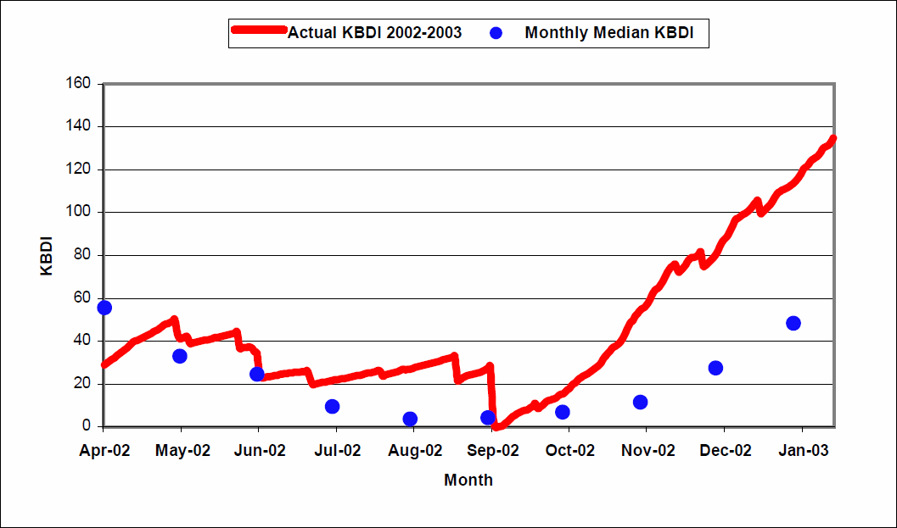

Create social media to incorporate tweets from Twitter account which would be related to the timeline (interesting points from Mcleod Inquiry Report). Schedule tweets: https://twittimer.com/. Tweets will have a link to the section which opens up in the timeline. A timeline of tweets will be embedded in our Canberra Bushfires page. How to embed a timeline: https://dev.twitter.com/web/embedded-timelines/user
Before January 2003, there had been a buildup of fuel around canberra. An El Nino event in 2002 and 2003 drove these conditions. El Nino is a phase of the Southern Oscillation that brings drier conditions to Australia; particularly the east. Low rainfall and high temperatures over the past months created a dangerous climate for fires. This graph shows the dryness of the soil using the Keetch-Byram Drought Index:
| Month | Median Rain |
Actual Rain |
Rain Anomaly |
Mean Max Temp |
02/03 Mean Max Temp |
Temp Anomaly |
|---|---|---|---|---|---|---|
| April | 37.6 | 21.2 | -16.4 | 19.8 | 22.4 | +2.6 |
| May | 39.7 | 27.0 | -12.7 | 15.4 | 16.3 | +0.9 |
| June | 30.3 | 40.8 | +10.5 | 12.2 | 13.2 | +1.0 |
| July | 36.9 | 16.8 | -20.1 | 11.2 | 12.5 | +1.3 |
| Aug | 45.6 | 22.8 | -22.8 | 12.9 | 14.8 | +1.9 |
| Sept | 53.5 | 58.4 | +4.9 | 16.0 | 17.7 | +1.7 |
| Oct | 55.5 | 11.6 | -43.9 | 19.2 | 21.3 | +2.1 |
| Nov | 55.5 | 10.4 | -45.1 | 22.5 | 27.5 | +5.0 |
| Dec | 39.4 | 18.2 | -21.2 | 26.1 | 28.1 | +2.0 |
| Jan | 47.7 | 10.4 | -37.3 | 27.8 | 30.5 | +2.7 |
On the 8th of January, an electrical storm passed over the area. The storm was accompanied by strong winds; northwesterly winds 30- 35 km/h, with gusts reaching 45 km/h as the decaying showers passed. This ignited fires in the mountains. These fires were referred to as the, Bendora, Stockyard Spur, Gingera, McIntyre Hut, and Mount Morgan fires. McIntyre Hut and Mount Morgan were in NSW with others reported at Yarrangobilly and Broken Cart.